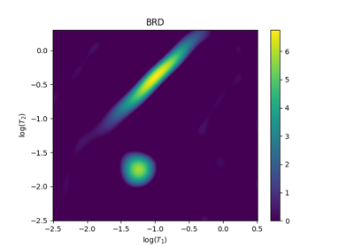
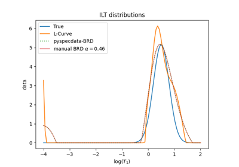

Regularization
¶
1, 1.5, and 2D regularization

2D ILT
2D ILT

1D BRD regularization
1D BRD regularization
Navigation
ND-Data
the lmfitdata class
List of Modules and Sub-Packages
LaTeX Notebook Functionality
The Figure List
Units
Example Gallery
PySpecData Examples
Polynomial Fitting
PPM in 2D
Error and units example
Calculation of the Covariance Matrix
Simple Convolution Example
Plotting Routines
Calculation of the Covariance Matrix
ppm Example
Basic Slicing/Filtering Example
Unevenly spaced data
DCCT
ESR
Regularization
UV
Fitting
XX Individual Functions XX
Related Topics
Documentation overview
PySpecData Examples
Previous:
Quantitative ESR
Next:
2D ILT
Quick search